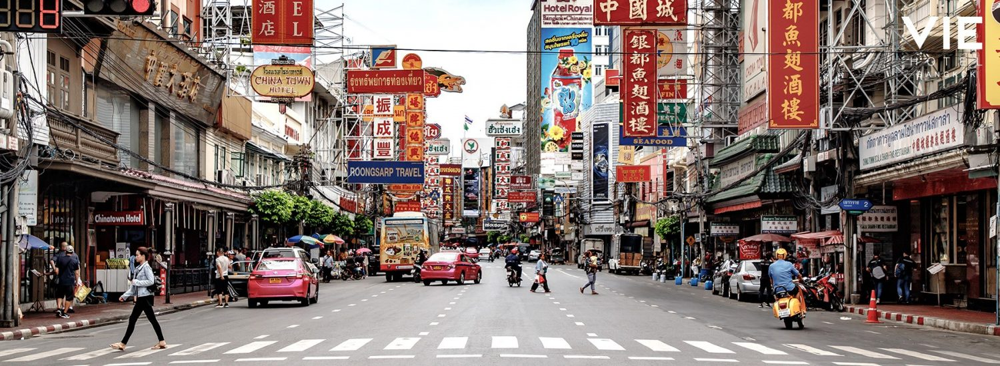
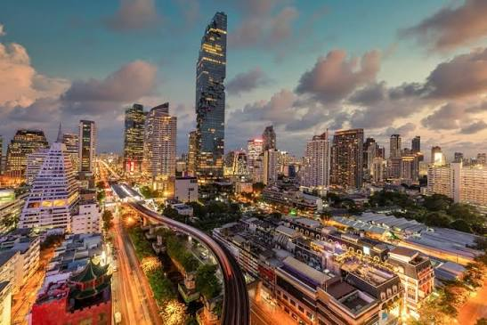
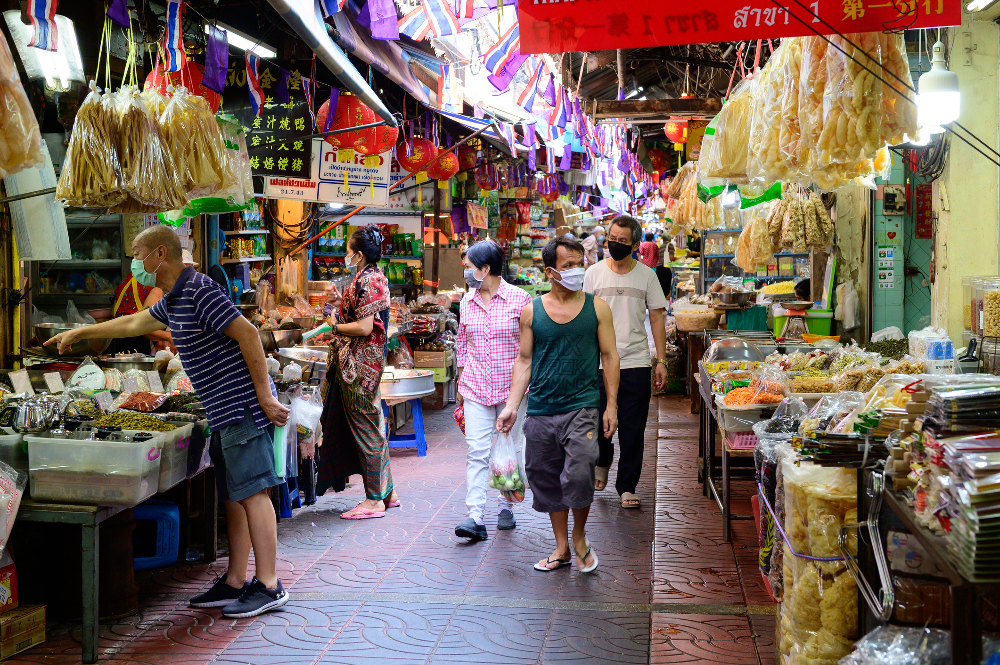
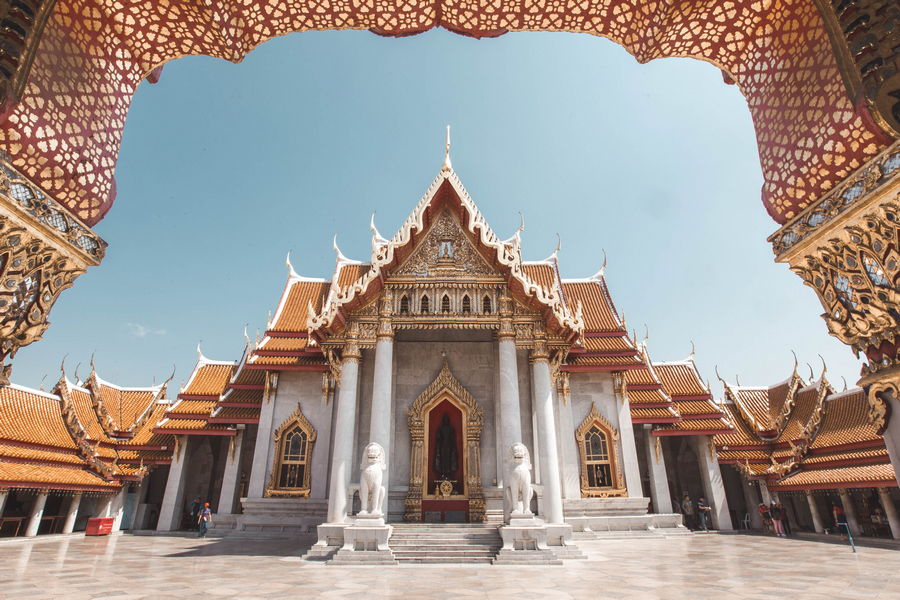
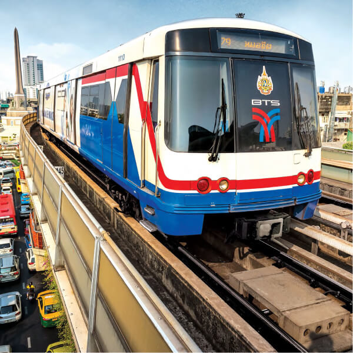
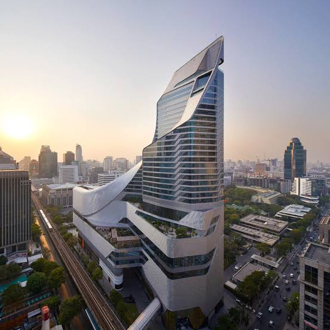

STORY
กรุงเทพฯ เป็นเมืองที่มีทั้งความเก่า และความทันสมัยอยู่ร่วมกัน
เราสามารถเห็นวัด ตลาดเก่า และอาคารดั้งเดิม อยู่ใกล้กับรถไฟฟ้า ตึกสูง และพื้นที่เมืองสมัยใหม่


กรุงเทพฯ เป็นเมืองที่มีทั้งความเก่า และความทันสมัยอยู่ร่วมกัน
เราสามารถเห็นวัด ตลาดเก่า และอาคารดั้งเดิม อยู่ใกล้กับรถไฟฟ้า ตึกสูง และพื้นที่เมืองสมัยใหม่
ภาพที่แสดงความแตกต่าง ระหว่างกรุงเทพฯ แบบดั้งเดิม และกรุงเทพฯ แบบสมัยใหม่

ตลาดเก่าและวิถีชีวิตแบบดั้งเดิม

วัดและสถาปัตยกรรมแบบดั้งเดิม

การเดินทางของกรุงเทพฯ สมัยใหม่

ตึกสูงและพื้นที่เมืองสมัยใหม่
เลือกหัวข้อนี้เพราะกรุงเทพฯ เป็นเมืองที่มีความแตกต่าง ระหว่างความเก่าและความใหม่ ให้เห็นได้อย่างชัดเจน
แต่ถึงจะแตกต่างกัน ทั้งสองด้านก็ยังสามารถ อยู่ร่วมกันได้ในเมืองเดียว